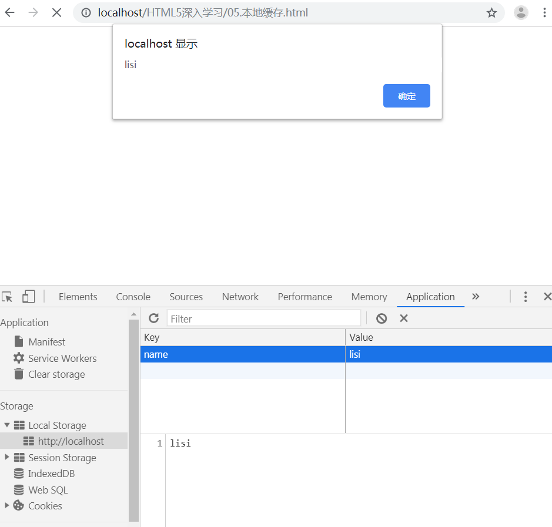
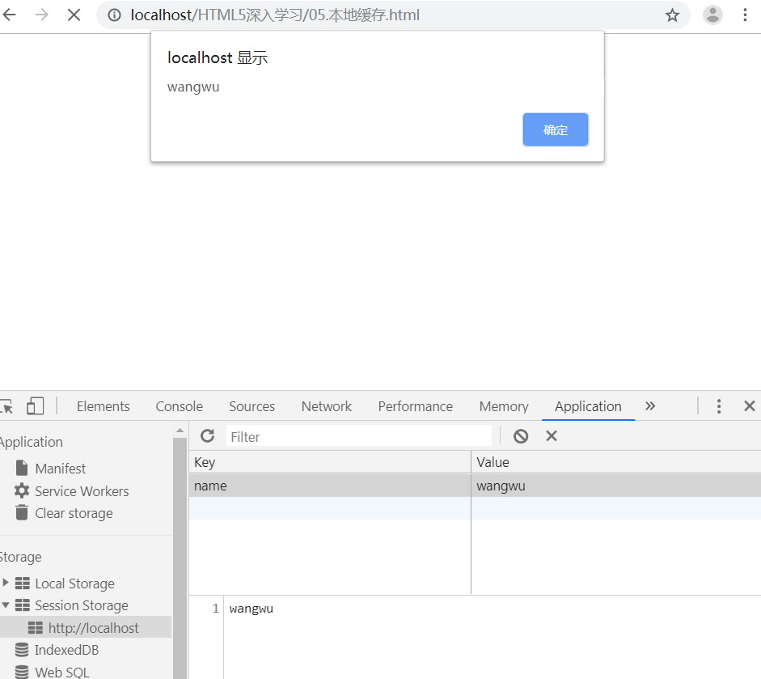
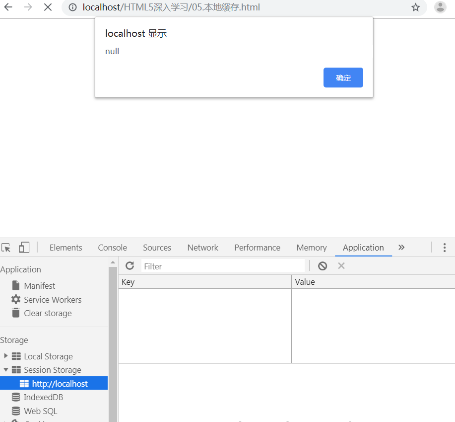

本来，数据存储都是由 cookie 完成的，但是 cookie 不适合大量数据的存储，cookie 速度慢且效率低。
现在，HMLT5提供了两种在客户端存储数据的办法：
首先我们先运行这段代码：
localStorage.setItem('name', 'lisi');
alert(localStorage.getItem('name'));然后浏览器则弹出显示：

接着，我们注释掉localStorage.setItem('name', 'lisi');，关闭浏览器重新访问，依然可以显示：
步骤大概和设置 localStorage 一样，但是浏览器关闭后再次访问已不见 sessionStorage
浏览器关闭前：

浏览器关闭后再次访问：

常用API:
代码：
<!DOCTYPE html>
<html lang="zh-CN">
<head>
<meta charset="UTF-8" />
<title>独秀不爱秀</title>
</head>
<body>
用户名: <input type="text" name="username" id="username"><br>
密码： <input type="password" name="pwd" id="pwd"><br>
记住用户名与密码: <input type="checkbox" name="save" id="save">
<script type="text/javascript">
var username = document.getElementsByName('username')[0];
var pwd = document.getElementsByName('pwd')[0];
var save = document.getElementsByName('save')[0];
if (localStorage.getItem('username') && localStorage.getItem('pwd')) {
// 将获取到的值添加到 HTML
username.value = localStorage.getItem('username');
pwd.value = localStorage.getItem('pwd');
}
save.addEventListener('click', function () {
if (save.checked) {
localStorage.setItem('username', username.value);
localStorage.setItem('pwd', pwd.value);
} else {
localStorage.removeItem('username');
localStorage.removeItem('pwd');
}
});
</script>
</body>
</html>